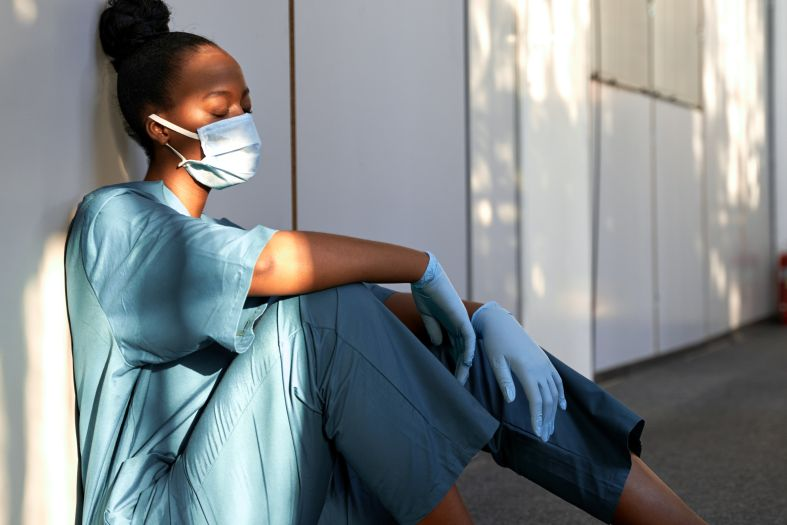

27 April, 2021
Surge Workforce planning resource for covid outbreaks
As an expeirienced nurse and manager,i remember my incognisant confidence that i was ready for this COVID monster.i was still confident at the time of the dreaded out breaks
27 April, 2021
Delivering effective infection control training for aged care voluteers
Voluteers have always been an important resource in our aged care facilities.During the recent in covid pandemic, however, they were unfortunately not considered an essential resource, and were excluded from

27 April, 2021
Surge Workforce planning resource for covid outbreaks
As an expeirienced nurse and manager,i remember my incognisant confidence that i was ready for this COVID monster.i was still confident at the time of the dreaded out breaks